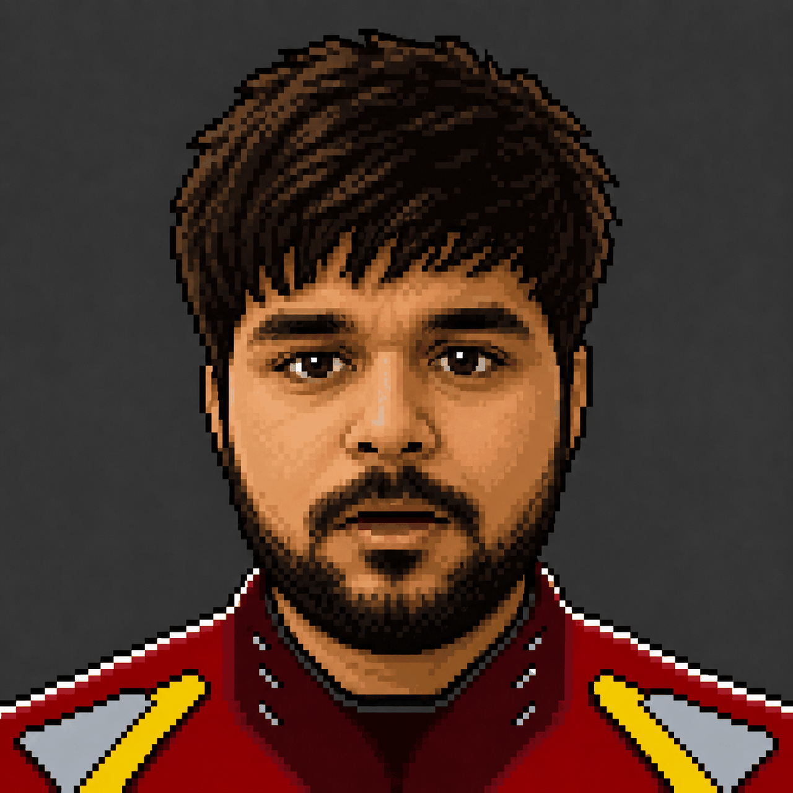

Built the foundation
- Developed an Ethereum-based PoC for derivatives workflows.
- Migrated ASP.NET legacy systems to .NET Core, improving performance by 20%.
- Learned to think in systems, latency, and reliable execution.

I started by building systems, then learned to shape user behavior, and now work where product intuition, business decisions, and execution meet. The whole page is the story: a professional walking through levels, collecting insight, and growing from engineer to product leader.
Each chapter is a level. The visual language changes as the character grows, from builder to product thinker to leader.
I start with the user’s real job, map the friction, and ask what behavior needs to change. Then I look at the system: what’s the engineering cost, what’s the commercial upside, and what should be measured? A good product manager can frame the problem, but a great one can also ship the thing.
I can still read architecture, prototype fast, and work comfortably with engineers and data.
I care about trust, motivation, ease, and the subtle habits that make people stay or leave.
I connect product choices to revenue, margin, retention, CAC, conversion, and strategic leverage.
The point is not to list skills. The point is to show the kind of product leader you become when technical depth, user instinct, and business thinking all reinforce each other.
Real products, real experiments, and real curiosity, all presented as part of the same story.

AI voice-based interview assessment backed by Google for Startups and NVIDIA Inception. Provisional patent, paid pilots, and a product shaped around assessment behavior.

AI expert consultation platform scaled to 20,000+ users and 10 B2B clients, driven by trust, access, and conversion-oriented product design.
These are not filler hobbies, they explain how I think about systems, attention, behavior, and calm decision making.

NVIDIA Ising models for QPU calibration and QRNG for resilient crypto.

Interested in the productivity illusion, attention, and how people make decisions under uncertainty.

10-day self-observation practice that strengthened focus and emotional clarity.

Kedarkantha and other climbs, a reminder that hard journeys are easier when broken into milestones.